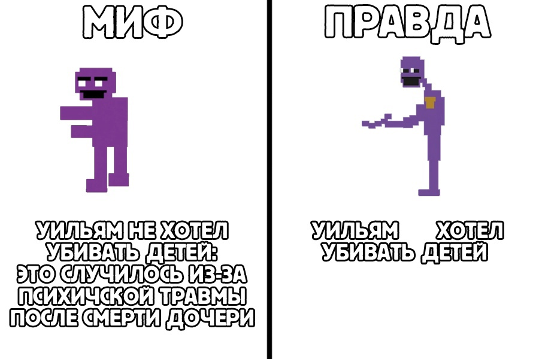

Call-центрТемой курсового проекта является администрирование сети сall–центра. |

|---|

ОписаниеCall–центр (от английского слова call – звонок) – это подразделение компании или отдельная организация, предоставляющая услуги обработки входящих и исходящих вызовов клиентов. По сути, это звено в воронке продаж, которое обеспечивает обратную связь с покупателем продукции бренда. Кроме того, сall–центр предполагает также услуги проведения соцопросов, различных голосований, акций и поддержки потребителей. Так называемые автоматические системы распределения звонков впервые были запущены в середине 60-х гг. Это было громоздкое оборудование PABX, в котором предусматривалось рабочее место оператора, система автоматизации и распределения звонков в отдельном здании, отделе компании. |
Меню |
Общая информацияВ call-центре происходит обработка больших массивов данных | |
ОписаниеCall–центр (от английского слова call – звонок) – это подразделение компании или отдельная организация, предоставляющая услуги обработки входящих и исходящих вызовов клиентов. По сути, это звено в воронке продаж, которое обеспечивает обратную связь с покупателем продукции бренда. Кроме того, сall–центр предполагает также услуги проведения соцопросов, различных голосований, акций и поддержки потребителей. Так называемые автоматические системы распределения звонков впервые были запущены в середине 60-х гг. Это было громоздкое оборудование PABX, в котором предусматривалось рабочее место оператора, система автоматизации и распределения звонков в отдельном здании, отделе компании. |
Меню |
Общая информацияВ call-центре происходит обработка больших массивов данных |
10.11.2021 |
|---|